Nous allons décrire la technologie des moteurs installés dans les usines d’incinération des ordures ménagères. Nous verrons qu’en fonction de leur usage et des contraintes de fonctionnement, les moteurs ne sont pas tous identiques. Nous nous intéresserons aussi aux équipements de protection électriques et aux différentes manières de démarrer un moteur.
À la fin de ce module, vous connaîtrez mieux les moteurs installés sur votre site, ainsi que leurs accessoires. Vous pourrez définir succinctement leurs principaux paramètres de fonctionnement et pourrez donc interpréter une plaque signalétique.
La plupart des entraînements de machines (pompes, ventilateurs, ponts de levage, l’outillage) s’effectuent à l’aide de moteurs électriques. Peut-on pour autant dire que tous les moteurs sont identiques ? D’un point de vue du fonctionnement et de leur technologie, ils le sont pratiquement tous. Pourtant, les conditions d’usage (fonctionnement par intermittence ou en continu), la nature et la taille même des machines entraînées (machines plus ou moins puissantes, à vitesse variable), les contraintes d’environnement (poussières, température, humidité) conduisent à considérer qu’en dépit de leurs ressemblances, les moteurs présentent des caractéristiques de fonctionnement bien spécifiques.
De plus, compte tenu de la diversité des tensions d’alimentation du réseau EDF, courant 220 V monophasé, 380 V triphasé ou alimentation continue, il existe différents modes de raccordements des moteurs au réseau.
Les moteurs sont utilisés pour transformer l’énergie électrique en énergie mécanique. Ils entraînent en rotation les pompes alimentaires des chaudières vapeur, les ventilateurs d’extraction des fumées ou les vis sans fin.
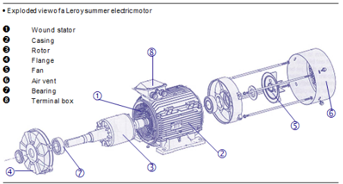
Dans un moteur, on distingue :
Nous développerons par la suite le rôle de chacun des composants.
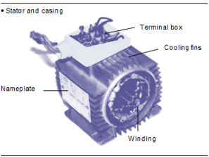
{figure}Le stator est la partie fixe du moteur. Il comporte des encoches dans lesquelles sont placées des conducteurs de cuivre pour former trois enroulements destinés à être alimentés en tension par un réseau électrique. Ces enroulements, isolés par un vernis, forment des paires de pôles magnétiques nord et sud équivalents à ceux d’un aimant.
Le nombre de paires de pôles ainsi que la fréquence de la tension d’alimentation du moteur conditionne la vitesse de rotation du rotor. On retrouve classiquement pour le réseau EDF en 50 Hz les vitesses suivantes :
figure[H]
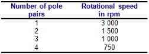
Le stator est supporté par un carter métallique aileté en alliage d’aluminium.
Les ailettes permettent le refroidissement du moteur.
Sur le carter on trouve une plaque signalétique sur laquelle sont inscrites les caractéristiques du moteur.
RotorLe rotor est la partie mobile du moteur. Il est le siège de phénomènes magnétiques (voir chapitre 2) permettant sa mise en rotation.
FlangesIls comportent un alésage destiné à recevoir le roulement à billes. Ce dernier permet la rotation du rotor par rapport au stator.
Le ventilateurLe ventilateur permet le refroidissement du moteur. Il est placé à l’arrière et protégé par une grille. L’air soufflé est dirigé sur toute la périphérie du moteur vers les ailettes du carter.
Dans certains cas, le moteur électrique peut être refroidi par le fluide véhiculé. Il ne comporte alors pas de ventilateur. C’est le cas par exemple des moteurs à rotors dits « noyés » équipant les pompes hydrauliques.
Boîte à bornesSouvent placée en partie supérieure, la boîte à bornes protège la plaque à bornes et permet le raccordement électrique du moteur.
On distingue deux familles de stators :
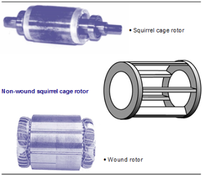
Il en existe deux types :
Les rotors en court-circuit sont constitués par un ensemble de conducteurs rigides en cuivre reliés entre eux à leurs extrémités par des anneaux pour constituer une cage. D’où le terme « cage d’écureuil ».
Les rotors bobinés sont constitués d’un enroulement similaire à l’enroulement statorique et raccordés à un jeu de résistance extérieure en série.
Ce montage permet de diminuer le courant de démarrage, mais nécessite plus d’entretien et le câblage des résistances de démarrage.
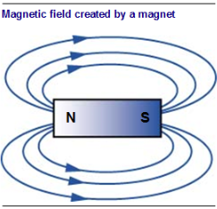
Certains corps ont la propriété d’attirer des particules de métal, on parle d’effet magnétique. C’est le cas des aimants naturels (magnétite).
Autour de l’aimant, on définit ce que l’on appelle un champ magnétique, c’est-à-dire l’espace dans lequel l’effet magnétique se fait ressentir. On représente ce champ magnétique par des lignes fictives appelées lignes de forces.
La figure ci-contre permet d’illustrer le champ magnétique autour d’un aimant.
Les boussoles, qui sont des aimants, s’alignent dans une direction bien précise : Nord-Sud. Ceci permet de caractériser les aimants par leurs pôles nord et sud. En mettant côte à côte des aimants, on remarque deux cas de figures.
Deux aimants de pôles opposés, nord et sud, s’attirent. Deux aimants de pôles identiques se repoussent.
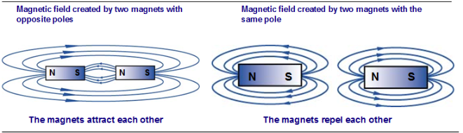
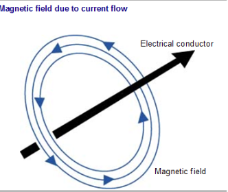
Les phénomènes magnétiques sont utilisés dans les moteurs électriques. On crée au niveau du stator un champ magnétique tournant qui a pour effet d’attirer en rotation le rotor.
Ce champ magnétique est obtenu par un passage de courant dans les enroulements du stator. En effet, lorsque l’on fait passer un courant dans une bobine, celle ci se transforme en aimant et crée un champ magnétique.
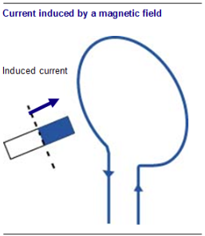
Le rotor composé de conducteurs métalliques est l’objet de phénomènes inverses. Lorsque l’on soumet un conducteur métallique à un champ magnétique, il se crée des courants dits « induits » qui à leur tour créent un champ magnétique opposé à celui qui l’a fait naître.
Le champ magnétique du rotor s’oppose au champ magnétique du stator tournant. Le rotor est alors entraîné en rotation.
Lorsque le moteur fonctionne, il s’échauffe. Dans le cas d’un échauffement anormal, le matériau isolant les enroulements peut être détruit. Il en résulte un court-circuit au sein du moteur.
L’échauffement anormal du moteur peut provenir d’un mauvais nettoyage des ailettes de refroidissement qui se recouvrent de poussières et de cendres.
Il peut provenir d’une surcharge lorsque la machine couplée au moteur devient difficile à entraîner (notion développée par la suite).
Il faut donc surveiller la température du moteur. Le moteur peut être protégé des surchauffes par surveillance de la température interne à l’aide d’un thermostat. Ce thermostat, appelé aussi protection ipsotherme, est intégrée au système de commande du moteur. Il a pour effet d’interrompre le fonctionnement du moteur si l’ambiance ou l’échauffement du moteur atteint une température dangereuse.
Selon le matériau isolant les enroulements, le moteur supporte des échauffements plus ou moins élevés.
Les constructeurs classent les isolements en cinq catégories, notées cl A à cl H, selon le matériau isolant.
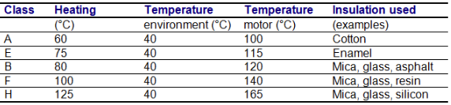
Les moteurs des usines d’incinération sont placés dans des ambiances très contraignantes. Le moteur peut être placé près d’endroits très poussiéreux (silos à chaux, le four d’incinération des ordures ménagères…). Il peut être placé à l’extérieur de l’usine et soumis aux intempéries. Il faut donc choisir un moteur en fonction du milieu où il est installé. Le constructeur donne pour chaque moteur un indice de protection.
Les indices de protection sont caractérisés par les lettres IP, suivies d’un chiffre qui détermine le degré de protection du moteur.
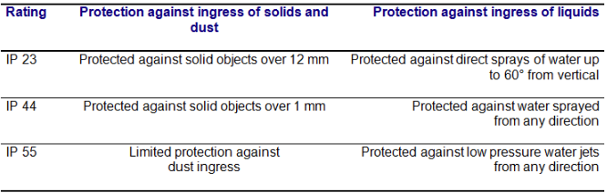
Selon l’indice de protection, on devra prendre des précautions quant au nettoyage du moteur. Un moteur IP23 ne doit pas être nettoyé avec un nettoyeur haute pression, car il n’est pas suffisamment protégé contre les projections d’eau. On risque des courts-circuits.
Les moteurs utilisés dans les usines d’incinération des ordures ménagères possèdent un IP55.
Un moteur électrique convertit l'énergie électrique fournie par le réseau en énergie mécanique.
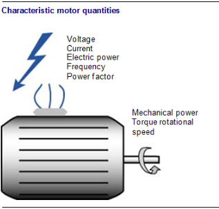
Les paramètres d'alimentation du moteur sont :
Les caractéristiques nominales sont les caractéristiques déclarées par le constructeur lorsque le moteur est utilisé dans des conditions optimales.
Les performances mécaniques du moteur sont caractérisées par :
Lorsque le moteur fonctionne, il est possible de mesurer, à l’aide d’un contrôleur électrique, la tension, l’intensité et la puissance électrique absorbée et le facteur de puissance $ $.
TensionEn règle générale, la tension est fixe aux bornes du moteur. Elle est imposée par la tension du réseau, 220 V ou 380 V. Il en est de même pour la fréquence qui est fixée à 50 Hz (sauf moteur à vitesse variable).
Puissance et courantEn revanche, la puissance, l’intensité absorbées et le facteur de puissance cos $ $ varient en fonction du travail que le moteur doit fournir. En effet, un moteur équipant la pompe d’alimentation des chaudières consomme plus d’électricité qu’un moteur équipant la pompe d’injection des produits de traitements d’eau.
Le travail qu’il doit fournir est appelé aussi « charge » du moteur.
On notera que la puissance et l’intensité augmentent avec la charge du moteur. Ainsi, il est possible, par simple mesure électrique, de savoir si un moteur est surchargé ou non, il suffit de comparer l’intensité mesurée avec l’intensité nominale. Si l’intensité absorbée est supérieure à l’intensité nominale, le moteur est surchargé. Il y a un danger potentiel pour le moteur, cela se traduit par une surchauffe des enroulements et un risque de destruction du moteur par court-circuit.
Cosinus phi ou facteur de puissanceLe cosinus phi ou facteur de puissance est au maximum dans une situation où le moteur tourne dans les conditions optimales déclarées par le constructeur. Le cosinus phi, noté cos $ $, dépend de la nature de l'équipement. Il est égal à 1 dans le cas d'équipements constitués d'éléments chauffants purs, de convecteurs électriques, ou de lampes électriques par exemple. Il varie entre 0,7 et 0,9 pour les moteurs.
Paramètres mécaniques Puissance mécanique et puissance nominalePour entraîner un ventilateur ou une pompe, le moteur doit être suffisamment puissant. Plus l’équipement entraîné est gros, plus la puissance mécanique disponible sur l’arbre du moteur doit être importante. La puissance mécanique maximale est indiquée sur la plaque du moteur sous le nom de puissance nominale en W. Elle augmente avec la vitesse de rotation.
En fonctionnement normal, la puissance mécanique fournie par le moteur s’adapte en fonction de la puissance demandée par l’équipement. La puissance mécanique est donc variable en fonction de la charge.
On notera que la puissance mécanique est différente de la puissance électrique absorbée sur le réseau. En effet, à l’intérieur du moteur, les pièces en mouvement frottent les unes contre les autres, il y a des frottements et donc des pertes d’énergie.
On définit alors la notion de rendement mécanique du moteur h (rhô).
\[ Le rendement est le rapport = { Puissance mécanique 100}{ Puissance électrique absorbée } \]
Plus la valeur du rendement est faible, pire c'est, plus l'électricité est consommée . Une bonne efficacité est d'environ 90-95
Le tableau ci-dessous répertorie les valeurs de rendement et de cosinus j en fonction de la charge du moteur (ou de la puissance nominale Rn).
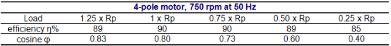
Il est important de ne pas surdimensionner les moteurs électriques par rapport à la charge, sinon le rendement et la cosinus $ $ goutte.
Le coupleLe couple moteur est indiqué en N.m. (Newton par mètre).
Il est le résultat de l’application d’une force à une distance.
Prenons l’exemple de deux personnes assises sur une balançoire. Elles sont de même poids, on dit aussi qu’elles exercent la même force, et elles sont assises à la même distance de l’axe de rotation.
Elles possèdent alors le même couple et la balançoire est en équilibre.
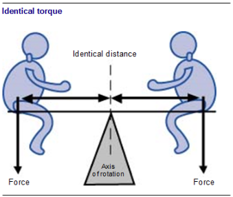
Si l’une des deux personnes est plus lourde, la balançoire tourne. La personne la plus lourde a le couple le plus important.
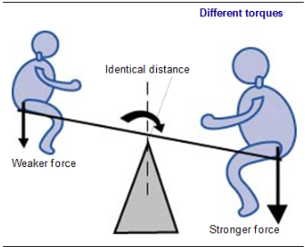
balançoirePour rétablir l’équilibre, la personne la plus lourde se rapproche de l’axe de rotation. Son couple diminue.
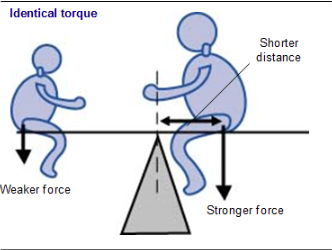
Il en est de même pour les moteurs électriques. Pour faire tourner des machines (pompes par exemple), le couple moteur doit être supérieur au couple résistant de la machine.
Vitesse de rotationCertaines machines peuvent être entraînées à différentes vitesses de rotation (750 tr/min et 1 500 tr/min). Il existe donc des moteurs qui tournent à des vitesses différentes. La vitesse dépend de deux paramètres :
La fréquence du réseau EDF étant fixée à 50 Hz, la vitesse de rotation du moteur est un multiple de 50.
Influence de la charge sur le moteurLorsque la charge augmente, l’intensité augmente, le couple et le rendement varient. Ils sont maximaux à la puissance nominale.
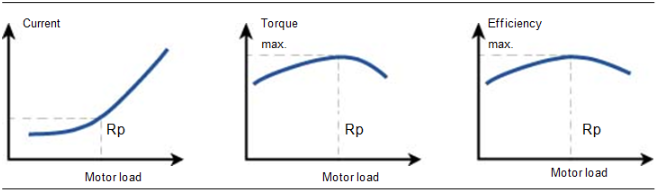
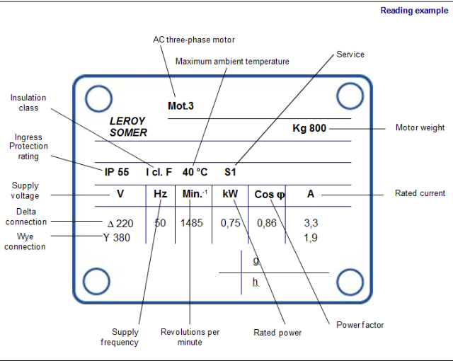
La plaque signalétique est apposée sur le carter du moteur. Il fournit les informations suivantes :
Certains moteurs, comme les moteurs de pompe d’alimentation des chaudières vapeur, fonctionnent 24 heures sur 24 ; d’autres, comme les moteurs d’injection des produits de traitement d’eau, fonctionnement par intermittence selon un cycle défini. Selon le mode d’exploitation du moteur, le constructeur définit la notion de service. Le service renseigne sur la manière dont peut fonctionner le moteur. On distingue huit types de service, de S1 à S8.
S1 est le service continu. Le moteur fonctionne à sa puissance nominale (Pn) plus de 10 minutes. C’est le cas des moteurs de pompe alimentaire.
S3 est le service intermittent périodique. Le moteur fonctionne selon des cycles de période inférieure à 10 minutes. Chaque cycle se compose d’une phase de fonctionnement à puissance nominale et d’une phase de repos (arrêt). C’est le cas des moteurs d’injection des produits de traitement d’eau.
De par sa construction, il n’y a pas de branchement sur le rotor. Le câblage est limité à celui du stator. Le stator est composé de trois enroulements (un par phase).
Si l’on ouvre la boîte à bornes du moteur, on peut remarquer deux types de branchements possible entre les six bornes d’alimentation du moteur :
On les distingue à la position de trois barrettes métalliques placées entre les six bornes.
Le type de branchement dépend de la tension admissible au niveau des enroulements du moteur 220 V ou 380 V. La tension admissible est indiquée sur la plaque signalétique. Chaque roulement ne peut supporter à ses bornes que la tension la plus basse indiquée sur la plaque signalétique.
Branchement triangleLe symbole utilisé est $ delta $. Ces liaisons sont réalisées par des barrettes métalliques.
Dans ce type de branchement, l’enroulement est à la tension du réseau. Il faut donc vérifier que l’enroulement est capable de supporter la tension 220 ou 380 V. Si l’enroulement ne supporte que du 220 V et que la tension du réseau est 380 V, il faut passer à un câblage étoile.
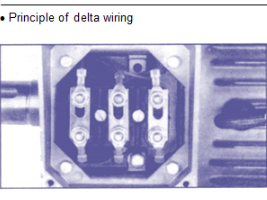
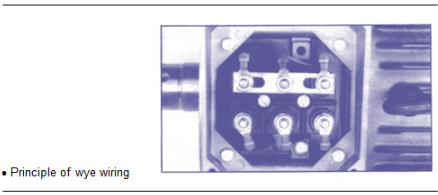
Branchement étoileLe symbole utilisé est Y.
Ces liaisons sont réalisées par les mêmes barrettes métalliques. Dans ce type de branchement, l’enroulement est à une tension inférieure à celle du réseau.
Si la tension du réseau est 380 V, l’enroulement sera soumis à une tension égale à 220 V.
Le tableau ci-dessous présente les différentes possibilités de câblage en fonction de la tension admissible à l’enroulement.
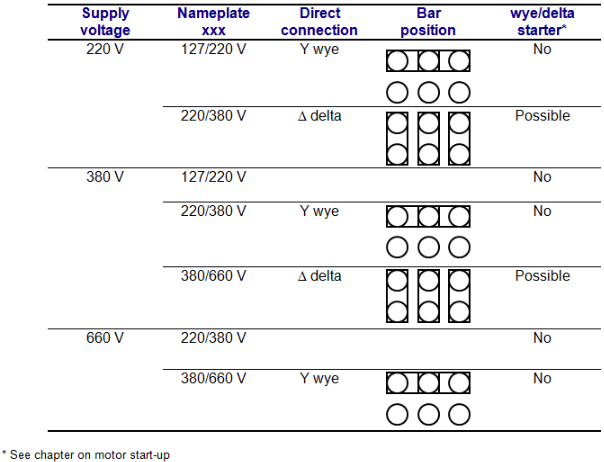
Remarque : Ces dernières années, les tensions délivrées par le réseau EDF ont augmenté ; on trouve à l’heure actuelle les tensions suivantes : 220/380 V, 230/400 V, 240/415 V.
La plupart des constructeurs de moteurs prennent en considération ces différentes tensions d’alimentation sur leur plaque signalétique.
Inversion de branchement d’une phase en triphasé tensionLors de travaux, il peut arriver que l’on inverse l’ordre des phases de branchement du moteur, qui tourne alors à l’envers. Il faudra toujours vérifier que le moteur tourne à l’endroit. Si ce n’est pas le cas, il suffit d’inverser le branchement de deux des phases au niveau de la boîte à bornes.
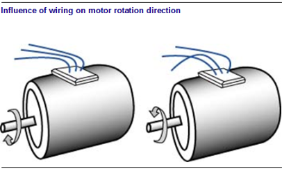
On distingue principalement deux types d’entraînement : direct ou par l’intermédiaire de poulies et de courroies ou de moto-réducteurs.
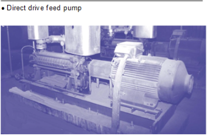
L’entraînement direct a l’avantage d’être plus simple à mettre en œuvre, d’être plus compact, mais il ne donne pas la possibilité de modifier la vitesse de rotation de l’élément entraîné (excepté par l’intermédiaire d’un variateur de fréquence).
L’accouplement doit être réalisé avec un alignement parfait pour éviter les surchauffes dues aux frottements et l’usure des roulements.
L’entraînement par un jeu de poulies-courroies permet de choisir la vitesse de rotation de l’élément entraîné (ventilateur le plus souvent). En revanche, il nécessite plus d’entretien, notamment la tension de la courroie.
Une courroie trop tendue « tire » sur les roulements des machines et provoque des surchauffes et des usures prématurées.
Une courroie pas assez tendue glisse au niveau des poulies, et le moteur ne peut pas passer la puissance. Les performances de la machine entraînée diminuent (baisse du débit d’air dans le cas des ventilateurs d’aérocondenseur et chute de puissance). La courroie siffle, s’échauffe et s’use beaucoup plus rapidement.
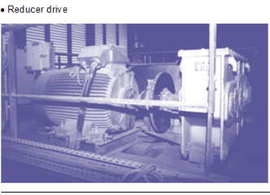
On peut mentionner un autre mode d’entraînement : celui par engrenages, appelés réducteurs.
Il a pour objectif de réduire ou d’augmenter la vitesse de rotation dans une plus grande amplitude ; on le rencontre sur des machines de forte puissance (couple important), en particulier sur les turbines vapeur alimentant l’alternateur, les convoyeurs et les compresseurs. Les engrenages nécessitent une lubrification constante. On vérifiera le niveau d’huile du carter.
Il existe différents types de moteurs :
Les moteurs sont protégés contre les défauts électriques suivants :
La surcharge du moteur se traduit par une forte consommation d’électricité, et donc une augmentation de l’intensité aux bornes du moteur. Pour éviter de détruire les enroulements, on protège le circuit à l’aide d’un disjoncteur magnéto-thermique placé en tête de circuit. Il peut arriver que la surintensité soit de courte durée, lors des phases de démarrage par exemple ; il est alors inutile de couper le circuit d’alimentation. Le disjoncteur ne coupe le circuit que si l’intensité augmente de manière durable.
Le disjoncteur protège aussi le moteur contre les courts-circuits.
Il existe une solution autre que l’utilisation du disjoncteur magnéto-thermique pour se prémunir contre les surcharges et les courts-circuits.
Les thermiques protègent contre les surcharges liées à une surconsommation lorsque le moteur est sollicité en dehors de sa plage de puissance nominale.
Les magnéto-thermiques protègent contre les déséquilibres de consommation, par exemple lors de mauvaises connexions.
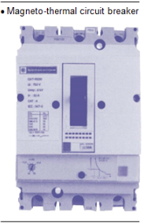
Contre les courts-circuits, on peut utiliser des fusibles notés aM pour accompagnement moteur. Il existe aussi des fusibles gG contre les courts-circuits et les surcharges, ils ont le même aspect que les fusibles aM.
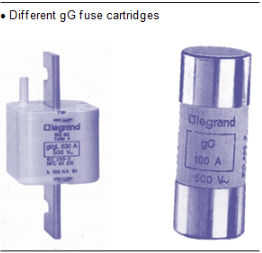
Les fusibles aM fondent et coupent l’alimentation du moteur dès que l’intensité devient trop forte. Ils ne protègent pas des surcharges car ils peuvent supporter une intensité six à huit fois supérieure à l’intensité nominale. C’est l’intensité dont a besoin le moteur lors du démarrage. Il faut alors utiliser en plus un autre équipement qui va protéger contre les surcharges ; il s’agit d’un relais thermique placé sur le contacteur qui sera réglé à la valeur de l’intensité nominale. Si l’intensité devient supérieure à l’intensité nominale le relais coupe le circuit. Comme le disjoncteur, si la surintensité est de courte durée, il ne coupe pas le circuit. C’est le cas lors de la phase de démarrage où l’intensité appelée est six fois supérieure à In, mais de courte durée.
Le relais thermique est placé sous le contacteur du moteur.
En ce qui concerne le défaut d’isolement, un disjoncteur différentiel est placé sur l’alimentation du moteur ou en amont de celle-ci. Si le différentiel détecte une fuite de courant, il coupe l’alimentation en électricité du circuit.
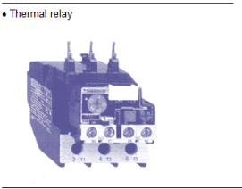
Les disjoncteurs magnéto-thermiques et les relais thermiques assurent une protection contre les surcharges lentes. Si l’on désire détecter une surcharge instantanée et les surchauffes, on installe aux endroits sensibles, près des enroulements du moteur, des protections thermiques.
Il existe deux types de protections : les thermostats et les sondes.
Lorsque le moteur est à l’arrêt et se refroidit, il peut se former dans le carter du moteur de la condensation, ce qui est une source de court-circuit. Pour éviter ce phénomène, on place des résistances chauffantes au niveau des enroulements.
On trouve en bas des moteurs un trou d’évacuation des condensats, obturé par un bouchon de plastique. Il faut l’ouvrir périodiquement pour éliminer les condensats et le reboucher pour conserver l’IP du moteur.
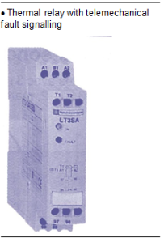
Lorsque l’on démarre un moteur électrique, le courant de démarrage est très important (six fois le courant nominal). De plus, le démarrage se fait brutalement, ce qui met à rude épreuve l’ensemble des organes mécaniques et électriques.
Il existe tout un ensemble d’équipements électriques plus ou moins sophistiqués qui assurent des démarrages lents avec des courants d’appel ou de démarrage faibles.
Le moteur est branché immédiatement sous la tension du réseau. Ce démarrage est généralement limité aux moteurs dont la puissance ne dépasse pas 25 kW. Le démarrage direct aux récepteurs qui exigent un couple élevé au départ et dans la mesure où la pointe d’intensité au démarrage est acceptable.
En ce qui concerne le défaut d’isolement, un disjoncteur différentiel est placé sur l’alimentation du moteur ou en amont de celle-ci. Si le différentiel détecte une fuite de courant, il coupe l’alimentation en électricité du circuit.
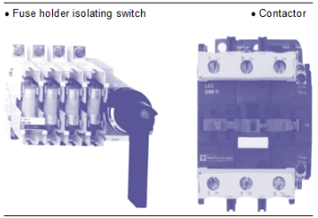
Avantages
Inconvénients
L’utilisation combinée de deux contacteurs, judicieusement câblés, permet, moteur en fonctionnement, de passer du branchement étoile au branchement triangle. On alimente la boîte à bornes du moteur de telle manière qu’au démarrage les branchements soient dans la configuration étoile et à l’aide d’une temporisation, on bascule en couplage triangle.
Cela permet de diminuer l’intensité de démarrage puisque la tension aux bornes des enroulements est plus faible.
Avantages
Inconvénients
On utilise obligatoirement un moteur asynchrone triphasé à rotor bobiné en étoile avec sorties sur trois bagues. L’intensité absorbée au primaire est limitée par la diminution du courant secondaire due à l’insertion de résistances dans le circuit rotorique. Le démarrage s’effectue en trois temps par l’élimination successive des résistances rotoriques.
Avantages
Inconvénients
Il est utilisé pour des machines relativement puissantes et il présente de nombreux avantages techniques. Le moteur est alimenté en tension réduite par l’intermédiaire d’un autotransformateur. Le démarrage s’effectue en trois temps :
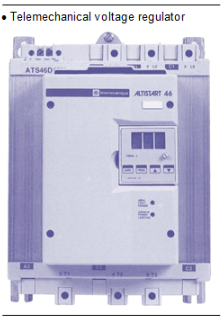
Avantages
Inconvénients
Remarque : Le gradateur de tension électronique fonctionne selon le même principe, son principal avantage étant d’assurer une variation de tension progressive ; on évite ainsi les à-coups de tension.
Le moteur est alimenté par un variateur qui fait varier la tension et la fréquence d’alimentation. Il assure des démarrages progressifs et une vitesse de rotation variable du moteur en fonction des besoins. Il est utilisé par exemple dans le cas du ventilateur de tirage ou exhaure.
Il permet de réaliser des économies d’énergie importantes.
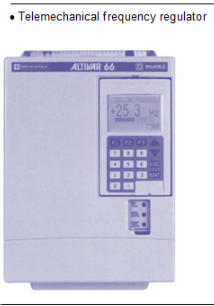
Il faut toujours veiller à respecter des périodes de refroidissement entre chaque démarrage. Les moteurs ont des spécifications concernant le nombre de démarrage par heure, ou une durée à respecter entre chaque démarrage.
Dans le cas d’un accouplement direct entre le moteur et la machine entraînée, il faut vérifier leur alignement, ceci pour éviter une usure rapide des roulements et une consommation excessive d’énergie.
Après quelques heures de fonctionnement, on vérifiera l’état de serrage des fixations du moteur.
Dans le cas d’une transmission par poulie-courroie, il faudra vérifier l’alignement, la tension des courroies ainsi que leur état d’usure.
Dans le cas d’une transmission par réducteur, on vérifiera le niveau et la qualité d’huile du carter.
Pour assurer un bon refroidissement du moteur, on vérifiera l’état de propreté du carter et le fonctionnement du ventilateur.
Pour les moteurs à roulements sans graisseur, les roulements sont graissés pour la durée de vie du moteur et ne nécessitent donc aucun entretien.
Pour les moteurs à roulements avec graisseurs, le constructeur indique la fréquence de graissage des roulements ainsi que le type de graisse à utiliser.
Lors de travaux électriques, il est possible d’inverser les phases de l’alimentation en triphasé du moteur. Pour s’assurer du branchement correct du moteur, on vérifiera le sens de rotation. Si le moteur tourne à l’envers, on permutera deux des phases du moteur.
Lorsque la température baisse, il peut se former des condensats à l’intérieur du moteur. On pourra les vidanger (tous les six mois selon les conseils du fabricant) au bas du moteur, puis on replacera les bouchons de vidange pour respecter l’indice de protection.
Les moteurs peuvent être équipés de rubans chauffants qui éliminent la condensation.
Pour surveiller les surchauffes, les moteurs peuvent être équipés de sondes thermiques qui permettent d’apprécier l’évolution de la température dans le temps.
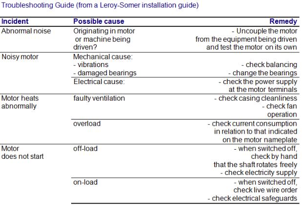